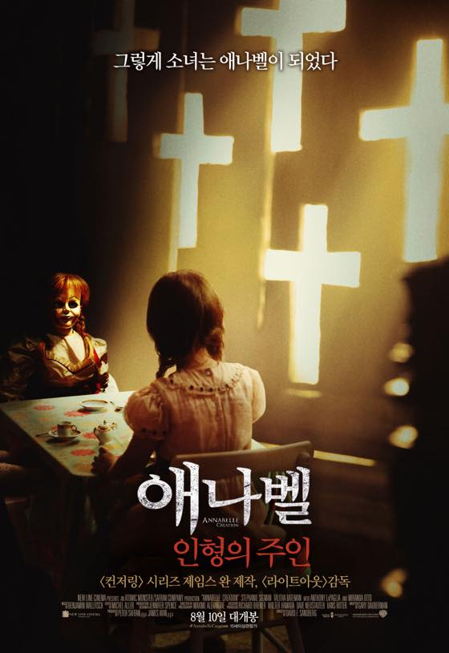

애나벨: 인형의 주인 (Annabelle: Creation, 2017)
아항항 방금 영화관 가서 보고 바로 후기 씁니다
워낙 이 시리즈를 좋아해서 개봉날 기다리고 있었습니다 ^^***
보는 내내 거참 악마도 정말 바쁘고 성실하게 사는구나 싶었어요 ㅋㅋ
사람 영혼 뺏는게 쉬운일은 아니더군욤
완급 조절 좋고 지루하지 않았습니다.
시리즈 중 순위를 매기자면 중간정도? :3
영화속에 꾸준히 등장하는 마릴린맨슨 닮은(....) 수녀 이야기도 언능 보고 싶습니다